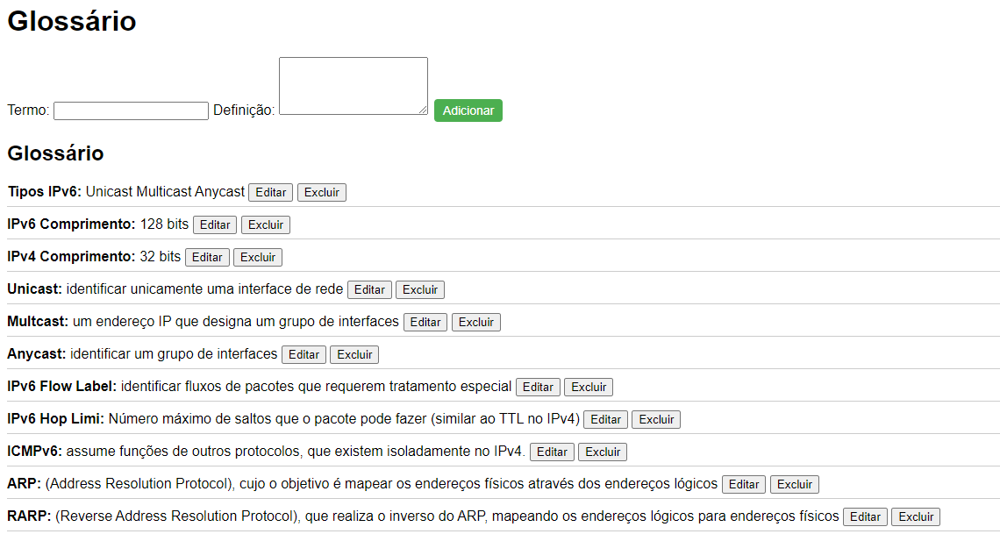

IPv6
Os endereços IPv6 foram criados com 128 bits de comprimento e nele é utilizado a notação hexadecimal, para facilitar a leitura dos endereços.
O protocolo IPv6 possui 3 tipos de endereçamento, são eles:
- UNICAST- Os endereços IPv6 Unicast se caracterizam por identificar unicamente uma interface de rede. Por isso, um pacote enviado à um endereço IPv6 Unicast vai ser entregue à uma única interface em todo o escopo do endereçamento IPv6.
- MULTICAST- Um endereço IPv6 Multicast é um endereço IP que designa um grupo de interfaces. Os pacotes enviados à um endereço multicast serão entregues a todos os endereços que compõe o grupo.
- ANYCAST- Um endereço Anycast é utilizado para identificar um grupo de interfaces, mas diferente do Multicast, o pacote destinado à um endereço Anycast é entregue somente à interface mais próxima da origem 
Para aprender mais sobre o IPv6, acesse os seguintes recursos:
Desafio
Quantos bits tem o IPv6?
Ethernet
Redes Ethernet são aquelas que utilizam cabos de par trançado para transmitir dados. Em contraste, as redes que não utilizam cabos são denominadas redes wireless ou redes sem fio.
Existem três padrões importantes na rede Ethernet que são:
- 10Base-T - 10 Megabit
- 100Base-TX - 100 Megabit
- 1000Base-T - 1000 Megabit
- 100Base-FX
- 1000Base-SX
- 1000Base-LX
- 10GBase-SR
- 10GBase-LR
- 40GBase-SR4
- Entre outros;
Atualmente, existem diversos padrões Ethernet que é importante conhecer, pois eles não se limitam apenas a cabos de par trançado, mas também incluem fibras ópticas e outros meios de transmissão.
Padrões Ethernet para Fibra Óptica

Para aprender mais sobre a Ethernet, acesse os seguintes recursos:
Desafio
Qual é o tipo de cabo Ethernet mais comum usado em residências?
TCP/UDP
Atualmente os computadores necessitam ter protocolos para possibilitar a conexão entre si, entre diversos protocolos que existam hoje em dia, dois se destacam pela sua importância e usabilidade que são o TCP (Transmission Control Protocol) e o UDP (User Datagram Protocol).
O TCP oferece entrega confiável de dados, o que significa que os dados são garantidos para chegar ao destino na ordem correta. O UDP não oferece entrega confiável de dados, mas é mais rápido e eficiente.
A escolha entre TCP e UDP depende do aplicativo específico. Alguns aplicativos, como e-mail e transferência de arquivos, exigem entrega confiável de dados, portanto, TCP é a melhor opção. Outros aplicativos, como VoIP e streaming de vídeo, não exigem entrega confiável de dados e podem se beneficiar da maior velocidade e eficiência do UDP.
Para aprender mais sobre TCP e UDP, acesse os seguintes recursos:
Desafio
Qual protocolo é mais adequado para um aplicativo de chat online?